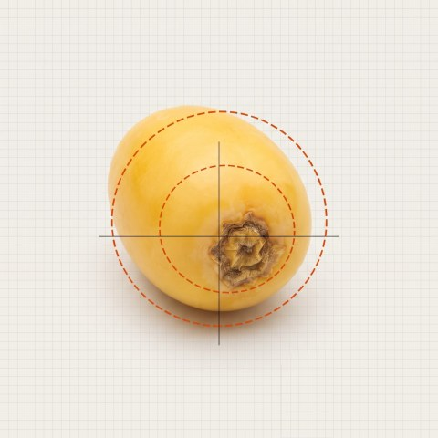

Operator guide
Setting the date sorter
The machine looks at every date and puts it in the right outlet.
You set the limits.
Understand
1The path of a date
Each date passes in front of the machine, then drops into its outlet.
The machine asks 3 questions, always in this order:
Setting · “Size” screen
2Weight
The size grade is the weight of the date, in grams.
To adjust: grab the red handle and slide it.
1Open the Size screen
2Slide the red handle, just a little
3Let go: it is saved
Handle to the right → more dates in the grade on the left.
Handle to the left → more dates in the grade on the right.
Handle to the left → more dates in the grade on the right.
Setting · “Moisture” screen
3Moisture
The machine measures the water inside the date, in %.
Same move: the red handle.
Never adjust by eye. A shiny date is not always a moist one.
Ask for a laboratory measurement first.
Ask for a laboratory measurement first.
Setting · “Quality” screen
4Defects
What the machine can recognise:
 Good
Good Very dry
Very dry Black mould
Black mould Unusable
Unusable Collet
Collet C
C
Ablouh Bombom
BombomOne slider per defect: mould, skin… It decides from when a date is rejected.
Slider up
→ fewer dates rejected
→ fewer dates rejected
Slider down
→ more dates rejected
→ more dates rejected
Only one slider
at a time
at a time
The right method
5Good practice
Always these 4 steps:
1Look
at 30 dates from the outlet
at 30 dates from the outlet
2Move
a little, one handle only
a little, one handle only
3Wait
10 minutes
10 minutes
4Check
weigh 30 dates
weigh 30 dates
To make settings you must be logged in: touch the padlock at the top, then enter your code.
Weigh 30 dates together and divide by 30. This average weight is what counts, not one single date.
Do not change everything at once. You would no longer know what made the difference.
If something goes wrong
6Problem?
Look at the banner at the top of the Prod screen.
| SORTING ACTIVE | Everything is fine. |
| SORTING SUSPENDED | All dates go to outlet 0. Press the Éjection button to resume sorting. |
| BLOWING OFF | No date is ejected. Call your supervisor. |
| Camera missing | One lane sorts badly. Call your supervisor. |
| MAINTENANCE MODE | Do not run production. Call your supervisor. |
| AI STOPPED | Defects are no longer detected. Call your supervisor. |
A setting seems to have disappeared? Check the variety name on the Prod screen: it may be another variety.
Never cut the power and do not close the software yourself.
Settings shown: those of 2 November 2026. The correct values are always the ones on the screen.